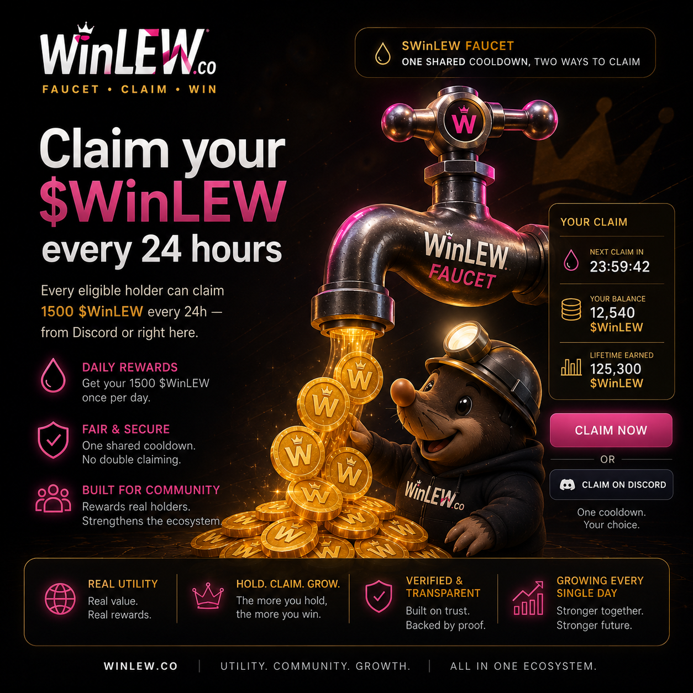

Claim your $WinLEW.
Every eligible holder can claim — $WinLEW every — — from Discord or right here.

💧 The Discord faucet and website faucet share one cooldown. Claiming from either location uses your faucet claim for the full cooldown period.
Total given away
Read straight from the blockchain — every payout the faucet reserve wallet has ever sent, since its very first one.
Of that, tracked by this platform
A subset of the total above: claims processed and confirmed by this website and bot. Confirmed claims only — never a projection, never a claim that failed before tokens were sent. It is smaller than the on-chain total because not every payout the wallet has made has a matching claim record here.
Loading your faucet status…
Prefer Discord?
You can also claim with !drip or !faucet in Discord, and check your status with
!faucetstatus. Every one of these shares the exact same cooldown as this page — claiming here
counts there, and vice versa.
💡 Wherever you claim from, the faucet pays the wallet registered to your account — and only that
wallet. To change it, register the new one first with !register <wallet-or-domain>.